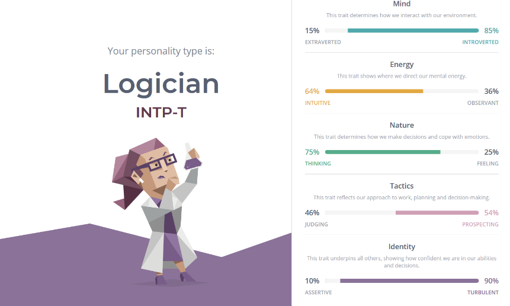

Welcome to my Profile
Personal Information
Name: Johnny Le
Student ID: s3599253
Email: s3599253@student.rmit.edu.au
Hello, my name is Johnny Le. I am 23 years of age and my background is Vietnamese. I can speak 2 languages - English and Vietnamese. I am currently studying Bachelor of Business majoring in Information Systems, I am currently
in my final semester and will graduate at the end of 2020. I have worked in various retail jobs as a teenager and am now working in the banking industry as
a customer service specialist within a branch. One of my hobbies is going to the gym and I have a pet dog whose breed is Maltese x Shihtzu.
Interest in IT
As I have an analytical mindset, an introvert and like working by myself and with complex issues, I am naturally inclined to be working in the IT industry.
I love new technology and have an innovative mindset which aligns with the neverending innovations of IT. I have experience in HTML, CSS and a bit of Python
which I really enjoy and hope it will help me in my future endeavours. I chose RMIT as RMIT is one of the leading Universities in technology and business.
It is also situated in the CBD which is a convenient location for me. At RMIT, I expect to learn both Business & IT skills that will ensure my employability
in the future.
Ideal Job
My future career aspirations would be to be a Business Analyst as I enjoy finding solutions to complex issues and like working with numbers. It
gives a variety of both the Business side and IT side of things which I find is a perfect balance for me with my current work experience background and
current University studies.
To be an analyst, one would first require to have exceptional communication skills as they are required to be the bridge between different areas of a business
and to be able to understand and translate it to other people. They are required to talk with stakeholders, be in charge of projects, and deal with a lot
of people. I find that with my current role at work as a Customer Service Specialist I feel that I have the necessary communication skills as I deal with
customers on a daily basis which develops my communication skills
Another skill of a BA is to be able to solve issues. I have done projects in Uni where I am able to understand a business process, both high level and low level
to be able to solve a particular business problem. I enjoy this as I have to combine both of my Business and IT skills.
Another required skill of a BA is IT skills such as programming, SQL and data visualisation tools. This helps BA to give meaning to a dataset or help create
solutions such as automating a task to make a process more efficient. I have worked with SQL and Python in my previous Univeristy courses which I find to
be very enjoyable and will be a very important skill needed for a BA.
A BA would generally require someone to have a degree in Business, IT, IS or statistics. I am currently studying Business (Information Systems) and am
going to graduate end of the year which will definitely bring me one step closer and be more qualified to be able to become a BA.
Personality Test


As shown with the results, I am a person who is quite reserved however I can work with with numbers and complex issues. My mind can
come with innovative solutions. This works well with being a BA however, it may require me to step outside of my comfort
zone and be more of an outgoing person to communicate effectively.
These results will potentially impact the way I work in teams. As I am a person who enjoys working alone and autonomously,
I won't be able to work in a team in a prolonged length of time. However, if I am assigned I task to complete by myself,
it is guaranteed that I will get it done, exceptionally well and within the deadline.
When forming a team, I can be the person helping to come up with ideas and solutions. I am probably not great in big teams
where there are discussions. However, it will be fine if it is a smaller capacity. I will need another person who is
more outgoing to be the team leader to balance out the personalities in the team.
Project Idea
My project idea relates to Internet of Things. As technology is exponentially growing, it is without a doubt
that it will be an important part of a person's life. Currently there are many IOT technology, such
as Google Home, Smart Fridges, Smart TVs, Smart Lights. To build upon this growing industry, I would
to suggest is similar to Google Home however would be centralised and connected to all devices. As
you wake up, coffee machine will be automatically made, while air conditioning will turn on depending
on the temperature to ensure you step out of bed in comfort.